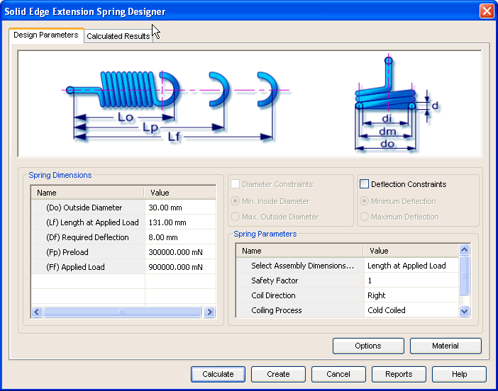

Extension Spring Design Parameters tab
The Design Parameters tab provides the options you use to enter details required for the design of extension spring. This tab consists of four areas.

Defines the parameters used in the design of the extension spring. The working deflection, preload length and the number of coils are some of the important parameters that you provide through this area.
Defines additional parameters used in the design of extension spring. These parameters are used as design constraints. Use the options provided above this area to set these constraints. The coiling direction and Hook Type are some of the important parameters you provide through this area.
Use the options button to select the type of loading, design criteria and other design constraints.
Use the Material button to select the material of spring.